Right Panel
Whether you are in Manage Shared Parameter tab or the Sync DB Properties tab, the Right Panel displays modifiable content for your project.
For example, while in the Manage Shared Parameters tab, ALL Shared Parameter information collected from Current Project, Project Parameters, Shared Parameter File and Linked Models will be displayed and the user could make desirable modifications.
User can modify all related properties to a Shared Parameter here all at once, in a batch fashion.
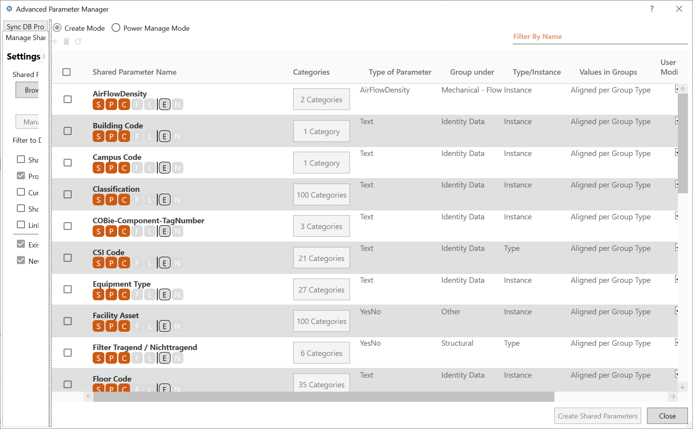
- Selection Column
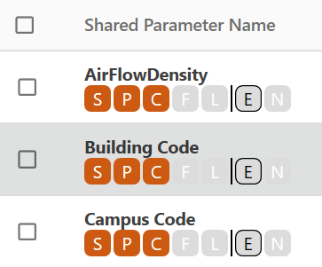
- Check on this column to indicate a certain row will be included in the Shared Parameter Creation or Deletion process later
- The checkbox in the column header is a “Check All” checkbox that will modify the checkbox status of all rows.
- Shared Parameter Name Column
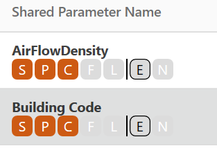
- This column displays the name of a Shared Parameter
- This column also indicates whether the current entry is an Existing SP, or an entry newly created by user and thus Pending Creation.
- User can edit this column on new SP entries to assign name for creation
- Icons below Shared Parameter Names are status indicators, these corresponds with filters on the left panel:
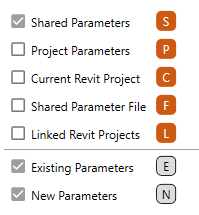
- When mouse hovers over the icons, a tooltip will display to indicate the meaning of the icon, which is the status of the Shared Parameter.
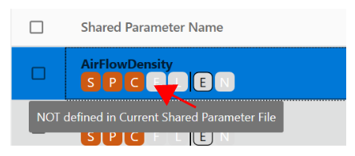
- User can use the filters in the Left Panel to filter the Shared Parameters by their status, and display on the Right Panel
- Categories Column
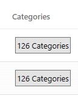
- This column contains a button that allows user to assign Categories to a Shared Parameter before it’s created as a Project Parameter. The button displays the number of Categories currently assigned to the given Shared Parameter entry.
- If the Shared Parameter entry status is not currently “Is Project Parameter”, user can click on the Button to assign Categories for later Project Parameter creation. If the Shared Parameter entry is already a Project Parameter, this button will be disabled.
- Once clicked on “N Categories” button, a secondary Dialog shows, where users will select desired Categories to assign to current SP entry:
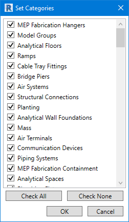
- User can user Ctrl+ / Shift+ select for multi-selection here, and apply Checkbox changes to all highlighted Categories
- When done, user clicks “OK” to apply changes on assigned Categories, or click “Cancel” to abandon changes.
- Type of Parameter Column
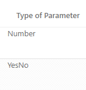
- This column allows user to assign Parameter Type to a Shared Parameter.
- If the Shared Parameter entry is currently “Pending Creation” – meaning it does not exist anywhere yet – user can click on the column cell to assign Parameter Type to the entry. If the Shared Parameter entry is an existing entry, the edit will not be allowed.
- Group Under Column
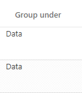
- This column allows user to assign a Parameter Group to a Shared Parameter when it’s later created as a Project Parameter. This “Parameter Group” is the group in the Property Palette in Revit Window.
- If the Shared Parameter entry is currently not a “Project Parameter”, user can click on the column cell to assign Parameter Grouping to the entry. If the Shared Parameter entry is an existing Project Parameter, the edit will not be allowed.
- Type/Instance Column
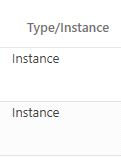
- This column sets if the Shared Parameter will be a Type Parameter or Instance Parameter when it’s later created as a Project Parameter.
- If the Shared Parameter entry status is currently not a “Project Parameter”, user can click on the column cell to set Instance/Type to the entry. If the Shared Parameter entry is an existing Project Parameter, the edit will not be allowed.
- Values in Groups Column
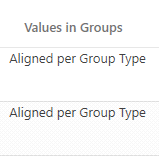
- This column determines if the value of the parameter can vary or must align in groups, when it’s created as Project Parameter.
- If the Shared Parameter entry status is currently not a “Project Parameter”, user can click on the column cell to modify the entry. If the Shared Parameter entry is an existing Project Parameter, the edit will not be allowed.
- User Modifiable Column
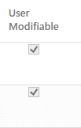
- This column determines if the Shared Parameter can be modified by users from the Property Palette in Revit Window. If Checked, the Shared Parameter will be editable from the Property Palette; if unchecked, the parameter will be greyed out in Property Palette.
- If the Shared Parameter entry is not in the current Shared Parameter File, user can click on the column cell to modify the entry. If the Shared Parameter entry is an existing definition in SP File, the edit will not be allowed.
- Parameter Visible Column
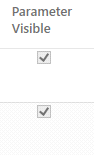
- This column determines if the Shared Parameter is visible by users from the Property Palette in Revit Window. If Checked, the Shared Parameter will be visible from the Property Palette; if unchecked, the parameter will not appear in Property Palette.
- If the Shared Parameter entry is not in the current Shared Parameter File, user can click on the column cell to modify the entry. If the Shared Parameter entry is an existing definition in SP File, the edit will not be allowed.
- User Modifiable Column
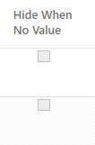
- This column determines if the Shared Parameter is hidden from Property Palette if the parameter has no value. This feature is only working in Revit 2020 and up.
- If the Shared Parameter entry is not in the current Shared Parameter File, user can click on the column cell to modify the entry. If the Shared Parameter entry is an existing definition in SP File, the edit will not be allowed.
- Tooltip Column
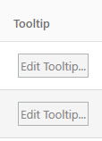
- This column contains a button to allow for edits on Parameter Tooltip Description.
- Click on the button to open a secondary Dialog and follow the prompt to type in Tooltip Description for a Shared Parameter. Click OK or Cancel to apply or revert change.
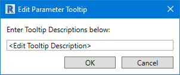
- If the Shared Parameter entry is not an existing entry – aka Pending Creation - user can click on the button to modify the entry. If the Shared Parameter entry is an existing entry, the button will be disabled.